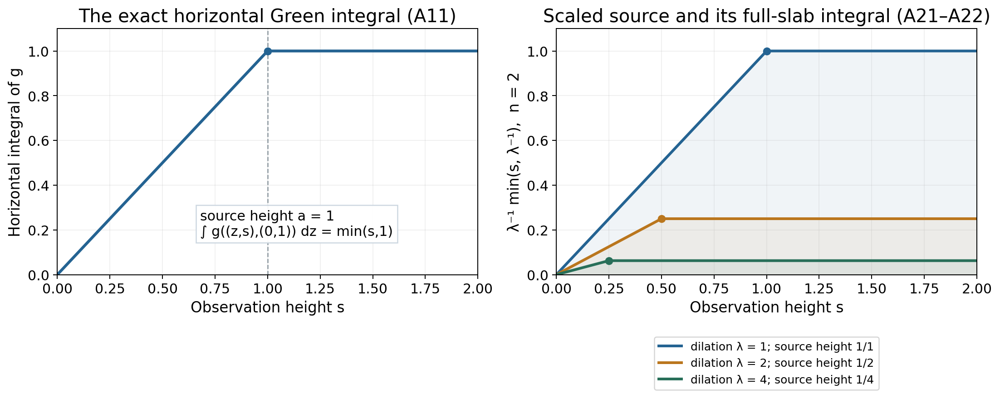
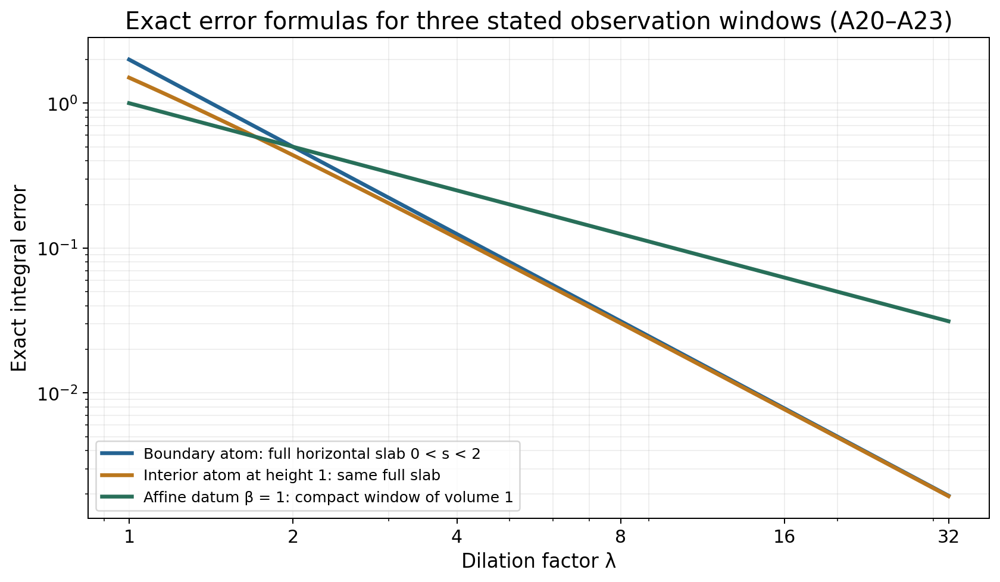

A linear profile under dilation
Original exposition by GPT-6.1 Sol (OpenAI), Ultra, October 2026. CC0 1.0.
A subharmonic function on the upper half-space can have singularities both in the interior and at its boundary. A linear upper bound in the height still forces a simple large-scale profile. After dividing by the dilation factor, its deviation from one linear function tends to zero in local integral norm, even in a window touching the boundary.
We prove this by integrating the two kernels in its representation. The useful identity is exact: the horizontal integral of the positive half-space Green kernel is the smaller of the observation height and the source height. This controls sources approaching the boundary without discarding the boundary part of the observation window.
The precise assertion and its written inputs
Let \(n\ge2\), write \(x=(z,s)\in\mathbb R^{n-1}\times\mathbb R\), and put
\[ \mathcal H=\{(z,s):s>0\}. \tag{A1} \]Let \(v:\mathcal H\to[-\infty,\infty)\) be subharmonic, not identically minus infinity, with
\[ v(z,s)\le C_0+C_1s. \tag{A2} \]The horizontal-envelope proof shows that
\[ M(s)=\sup_zv(z,s),\qquad \gamma=\lim_{s\to\infty}\frac{M(s)}s \tag{A3} \]has a finite real limit. The other input is the complete half-space Green–Poisson representation: with \(\mu=\Delta v\ge0\) and a signed boundary Radon measure \(\sigma\),
\[ v(x)=\gamma s+\int_{\mathbb R^{n-1}}p_s(z-\xi)\,d\sigma(\xi) -\int_{\mathcal H}g(x,y)\,d\mu(y), \tag{A4} \]where
\[ \int(1+|\xi|)^{-n}\,d|\sigma|(\xi)<\infty, \qquad \int_{\mathcal H}y_n(1+|y|)^{-n}\,d\mu(y)<\infty. \tag{A5} \]These are weighted conditions. Neither measure is assumed to have finite total mass. Here \(g\) is the positive Green kernel, so the potential in (A4) has a minus sign. The representation proof supplies the boundary measure and these two integrability conditions. The rest of the estimates are proved here. Finite-measure integration, Tonelli and dominated convergence use the written integration foundations, §§15.0–15.1 and §16.4; coordinate differentiation and Euclidean surface measure are the ordinary calculus inputs.
Theorem A1. For every compact \(K\subset\overline{\mathcal H}\),
\[ \lim_{\lambda\to\infty} \int_{K\cap\mathcal H} \left|\frac{v(\lambda x)}\lambda-\gamma x_n\right|\,dx=0. \tag{A6} \]The integral is with respect to \(n\)-dimensional Lebesgue measure. The boundary hyperplane has that measure zero; no pointwise boundary value of \(v\) is required. In particular this is local \(L^1\) convergence on the closed half-space, interpreted in its volume measure.
The two explicit kernels
Write \(\omega_n\) for the area of the unit sphere in \(\mathbb R^n\). The Poisson density on the horizontal boundary is
\[ p_s(z)=\frac{2s}{\omega_n(|z|^2+s^2)^{n/2}},\qquad s>0. \tag{A7} \]It is nonnegative and
\[ \int_{\mathbb R^{n-1}}p_s(z)\,dz=1. \tag{A8} \]Here is a normalization calculation. Substituting \(z=sq\) reduces the integral to \((2/\omega_n)\int(1+|q|^2)^{-n/2}\,dq\). The map \(q\mapsto(q,1)/\sqrt{1+|q|^2}\) parametrizes the open upper hemisphere. Its metric matrix is \((1+|q|^2)^{-1}I-(1+|q|^2)^{-2}qq^{\mathsf T}\). The eigenvalue in the radial direction is \((1+|q|^2)^{-2}\); the other \(n-2\) eigenvalues are \((1+|q|^2)^{-1}\). The square root of its determinant is \((1+|q|^2)^{-n/2}\). Thus the last integral is the upper hemisphere's area, \(\omega_n/2\), proving (A8). In dimension two the same calculation is the elementary integral \(\pi^{-1}\int_{\mathbb R}(1+q^2)^{-1}dq=1\).
For \(y=(\eta,a)\in\mathcal H\), let \(y^*=(\eta,-a)\). With the Laplacian kernel of the local-potential proof,
\[ g(x,y)=E_n(x-y^*)-E_n(x-y)\ge0, \tag{A9} \]where \(E_n(r)=-r^{2-n}/((n-2)\omega_n)\) for \(n>2\), and \(E_2(r)=\log r/(2\pi)\). The source point has the usual extended singular value. Set \(\rho=|z-\eta|\). Direct integration of the power, or the logarithm when \(n=2\), gives the common identity
\[ g((z,s),(\eta,a)) =\frac1{2\omega_n} \int_{\rho^2+(s-a)^2}^{\rho^2+(s+a)^2}u^{-n/2}\,du =\frac12\int_{|s-a|}^{s+a}p_h(z-\eta)\,dh. \tag{A10} \]The value at \(h=0\) does not affect this integral. At the diagonal both expressions have their matching infinite value. Tonelli and (A8) now prove
\[ \int_{\mathbb R^{n-1}}g((z,s),(\eta,a))\,dz =\frac12(s+a-|s-a|)=\min(s,a). \tag{A11} \]This is the horizontal-integral identity. In particular the singularity of the kernel has not invalidated its integral estimate.

Figure 1. The solid functions are the exact quantities in (A11) and its rescaled version (A17), with source height one and dilation factors one, two and four. Their corners move toward height zero. The shaded area under each curve on \(0<s<2\) is the complete horizontal-slab integral, not a sample of a finite horizontal window. The full formula is derived in Example 2.
Integrated kernels on a fixed window
Choose \(R\ge1\) with \(K\subset\{|x|\le R,x_n\ge0\}\). Define
\[ J_P(\xi)=\int_{K\cap\mathcal H}p_{x_n}(x'-\xi)\,dx, \qquad J_G(y)=\int_{K\cap\mathcal H}g(x,y)\,dx. \tag{A12} \]All integrands are nonnegative. There is a constant depending on the chosen window such that
\[ J_P(\xi)\le C_K(1+|\xi|)^{-n},\qquad J_G(y)\le C_K y_n(1+|y|)^{-n}. \tag{A13} \]We give both the near and far estimates, since the factor \(y_n\) in the second one matters near the boundary.
For the Poisson kernel, (A8) and the inclusion in the horizontal slab yield \(J_P(\xi)\le R\), uniformly in \(\xi\). If \(|\xi|>2R\), then \(|x'-\xi|\ge|\xi|/2\) throughout the window, and (A7) gives \(p_{x_n}(x'-\xi)\le(2^{n+1}/\omega_n)R|\xi|^{-n}\). Integrating this bound over \(K\cap\mathcal H\) proves the far estimate. On \(|\xi|\le2R\), enlarge the constant in the uniform bound by \((1+2R)^n\). The two regions prove the first part of (A13).
For the Green kernel, (A11) gives the stronger uniform estimate
\[ J_G((\eta,a))\le\int_0^R\min(s,a)\,ds\le Ra. \tag{A14} \]If \(|y|>2R\), then \(|x-y|\ge|y|/2\). The interval in the first integral of (A10) has length \(4x_ny_n\), and its smallest squared distance is \(|x-y|^2\). Hence
\[ g(x,y)\le\frac{2}{\omega_n}x_ny_n|x-y|^{-n} \le\frac{2^{n+1}}{\omega_n}R y_n|y|^{-n}. \tag{A15} \]After integration this is the far Green estimate. On \(|y|\le2R\), (A14) provides the required factor \(y_n\) with a uniform constant. Combining the regions proves the second part of (A13), even for source heights tending to zero.
Dilation and the proof of the theorem
The explicit formulas give
\[ p_{\lambda s}(\lambda z-\xi) =\lambda^{1-n}p_s(z-\xi/\lambda), \qquad g(\lambda x,y)=\lambda^{2-n}g(x,y/\lambda). \tag{A16} \]For the logarithmic kernel the two \(\log\lambda\) terms cancel, so the Green factor is \(\lambda^0=1\), as (A16) requires for \(n=2\). Define the nonnegative integrated scaled kernels
\[ K_{P,\lambda}(\xi)=\lambda^{-n}J_P(\xi/\lambda), \qquad K_{G,\lambda}(y)=\lambda^{1-n}J_G(y/\lambda). \tag{A17} \]For \(\lambda\ge1\), (A13) implies
\[ K_{P,\lambda}(\xi)\le C_K(\lambda+|\xi|)^{-n} \le C_K(1+|\xi|)^{-n}, \] \[ K_{G,\lambda}(y)\le C_K y_n(\lambda+|y|)^{-n} \le C_Ky_n(1+|y|)^{-n}. \tag{A18} \]For each fixed \(\xi\), the uniform estimate \(J_P\le R\) shows \(K_{P,\lambda}(\xi)\le R\lambda^{-n}\to0\). For each fixed \(y\), (A14) shows \(K_{G,\lambda}(y)\le R y_n\lambda^{-n}\to0\). The right sides of (A18) are integrable against \(|\sigma|\) and \(\mu\) by (A5). Dominated convergence therefore gives
\[ \int K_{P,\lambda}\,d|\sigma| +\int K_{G,\lambda}\,d\mu\longrightarrow0. \tag{A19} \]The triangle inequality in (A4), followed by Tonelli for the two positive majorants, bounds the left side of (A6) by the left side of (A19). Those majorants also show that the representation's deviation is integrable on the window; infinite potential values occur only on a volume-null set there. This proves Theorem A1. \(\square\)
The proof applies directly to a signed boundary measure. It does not need to subtract \(C_0\) first or assume that \(\gamma\) is nonnegative. It also does not turn volume convergence into uniform or everywhere pointwise convergence.
A separate one-dimensional conclusion
In dimension one the half-space is the interval \((0,\infty)\). The one-dimensional kernel proof shows that a nontrivial subharmonic function is finite, continuous and convex there. Suppose it satisfies the same height bound (A2). The increasing secants \((v(T)-v(1))/(T-1)\), \(T>1\), are bounded below by their value at two and have limiting upper bound \(C_1\). They therefore have a finite real limit \(\gamma\). The identity
\[ \frac{v(T)}T =\frac{T-1}{T}\frac{v(T)-v(1)}{T-1}+\frac{v(1)}T \tag{A24} \]shows that this is also \(\lim_{T\to\infty}v(T)/T\).
There is a finite absolute bound on \(v\) for every interval \((0,T_0]\). For \(0<s<1\), convexity gives
\[ \frac{v(1)-v(s)}{1-s}\le v(2)-v(1), \quad\text{hence}\quad v(s)\ge v(1)-(1-s)(v(2)-v(1)). \tag{A25} \]This supplies a uniform lower bound near zero; (A2) supplies an upper bound. Continuity supplies an absolute bound on the remaining compact interval.
For \(R>0\) and \(\varepsilon>0\), choose \(T_0\ge1\) with \(|v(t)/t-\gamma|<\varepsilon\) for \(t\ge T_0\). If \(T_0/\lambda\le s\le R\), then \(|v(\lambda s)/\lambda-\gamma s|\le\varepsilon R\). If \(0<s<T_0/\lambda\), let \(B\) be the absolute bound on \((0,T_0]\); the error is at most \((B+|\gamma|T_0)/\lambda\). Thus
\[ \sup_{0<s\le R}\left|\frac{v(\lambda s)}\lambda-\gamma s\right| \longrightarrow0. \tag{A26} \]In particular the volume-integral conclusion holds on every compact subset of \([0,\infty)\). This direct one-dimensional proof uses convexity and does not import an exponent from a higher-dimensional kernel formula.
Three worked examples
1. A negative boundary atom. In dimension two let
\[ v(z,s)=\gamma s-\frac{s}{\pi(z^2+s^2)}. \tag{A20} \]This is harmonic in the open half-plane and is at most \(\gamma s\). For every height the negative kernel approaches zero as \(|z|\to\infty\), so the horizontal supremum is \(\gamma s\). It is not attained. The boundary measure is \(-\delta_0\), the interior measure is zero, and the exact scaled deviation is \(-\lambda^{-2}p_s(z)\). Over the full horizontal slab \(0<s<R\), its absolute integral is \(R\lambda^{-2}\), by (A8). This controls every compact subwindow touching the boundary.
2. An interior atom moves toward the boundary. Let \(v(x)=\gamma x_n-g(x,(0,a))\), with \(a>0\). The Green sign convention gives \(\Delta v=\delta_{(0,a)}\); the boundary measure is zero. Again \(v\le\gamma x_n\), and its horizontal supremum is \(\gamma x_n\) because the Green kernel tends to zero in horizontal infinity. Using (A11), the horizontal integral of the absolute scaled deviation at height \(s\) is
\[ \lambda^{1-n}\min(s,a/\lambda). \tag{A21} \]If \(a/\lambda\le R\), integration on the full slab gives exactly
\[ Ra\lambda^{-n}-\frac{a^2}{2}\lambda^{-n-1}. \tag{A22} \]Its singularity is at \((0,a/\lambda)\); this movement prevents a naive uniform argument. Formula (A22) proves its integral convergence nonetheless.
3. Infinite boundary mass and a slower rate. For the affine function \(v(z,s)=\beta+\gamma s\), take \(\sigma=\beta\,dz\) and \(\mu=0\). The boundary measure has infinite total variation when \(\beta\ne0\), but \(\int(1+|z|)^{-n}dz<\infty\) in dimension \(n-1\): its radial integrand at infinity is bounded by a constant times \(r^{-2}\). By (A8) it gives the constant \(\beta\) in the representation. The exact error on a compact window is
\[ \int_{K\cap\mathcal H}\left|\frac{v(\lambda x)}\lambda-\gamma x_n\right|dx =\frac{|\beta|}{\lambda}|K\cap\mathcal H|. \tag{A23} \]Thus the theorem does not promise the atom examples' \(\lambda^{-n}\) rate for every weighted measure.

Figure 2. Dimension two, height bound \(R=2\), interior atom height \(a=1\). The first two curves are exact full-slab errors \(2\lambda^{-2}\) and \(2\lambda^{-2}-\tfrac12\lambda^{-3}\), respectively. The affine curve uses \(|\beta|=1\) and a compact window of volume one, so its exact error is \(\lambda^{-1}\). The captions identify the different observation windows; the convergence theorem and the rates are proved in (A19), (A22) and (A23).
Exercises and complete solutions
Exercise 1. Verify the coefficient in (A10) in dimensions two and three.
Solution. In dimension two \(\omega_2=2\pi\). The first integral is \((4\pi)^{-1}\log((\rho^2+(s+a)^2)/(\rho^2+(s-a)^2))\), equal to \((2\pi)^{-1}\log(|x-y^*|/|x-y|)\), which is (A9). In dimension three, \(\omega_3=4\pi\), and integrating \(u^{-3/2}/(8\pi)\) gives \((4\pi)^{-1}(|x-y|^{-1}-|x-y^*|^{-1})\), again (A9). These are positive kernels; their negatives have Laplacian equal to the positive source atom.
Exercise 2. Why does an estimate \(J_G(y)\le C\) near bounded sources fail to supply the needed dominating function near height zero?
Solution. The hypothesis controls \(y_n\,d\mu\), with its additional decay weight, rather than \(d\mu\) itself. For example the atoms \(y_j=(0,2^{-j})\) with masses \(1/j\) have infinite total mass but finite weighted sum \(\sum_j2^{-j}/j\). A constant majorant is not integrable against this measure. The exact bound \(J_G(y)\le Ry_n\) in (A14) is. This example concerns the necessity of the estimate's weight; it does not assert an additional unproved representation theorem for the atomic sum.
Exercise 3. For an interior atom at height one in dimension three, compute its full-slab scaled integral when \(R=2\) and \(\lambda=2\).
Solution. Here (A22) is \(2\lambda^{-3}-\tfrac12\lambda^{-4}\). At \(\lambda=2\) it is \(1/4-1/32=7/32\). Equivalently, integrate \(\lambda^{-2}\min(s,1/\lambda)=\tfrac14\min(s,1/2)\) from zero to two. The part below \(1/2\) contributes \(1/32\); the rest contributes \(3/16\), with the same sum \(7/32\).
Exercise 4. Does (A6) require a boundary trace for \(v\)? What if the compact window lies entirely in the boundary hyperplane?
Solution. It requires only the volume-integrable interior representative. The boundary hyperplane has \(n\)-dimensional Lebesgue measure zero, so any assigned values there do not change the integral. If the whole window lies in that hyperplane, its volume integral is zero for every dilation. The theorem does not claim convergence of boundary traces in surface measure.
Exercise 5. Derive (A18) and explain why domination holds only after fixing a lower bound such as \(\lambda\ge1\).
Solution. For the Poisson term, \(\lambda^{-n}(1+|\xi|/\lambda)^{-n}=(\lambda+|\xi|)^{-n}\). For the Green term, \(\lambda^{1-n}(y_n/\lambda)(1+|y|/\lambda)^{-n} =y_n(\lambda+|y|)^{-n}\). When \(\lambda\ge1\), these are at most the corresponding weights with one in place of \(\lambda\). This is all that is needed for a limit at infinity; a bound uniform as \(\lambda\downarrow0\) is neither used nor asserted.
Exercise 6. Can \(\gamma\) be negative? Give an exact example and its integral error.
Solution. Let \(v(z,s)=3-s/4\). It is harmonic, satisfies (A2) with \(C_0=3\) and \(C_1=-1/4\), and its horizontal supremum is \(3-s/4\). Thus \(\gamma=-1/4\). On a window of volume \(V\), its exact error is \(3V/\lambda\). Positivity of the interior Laplacian measure does not require a positive linear slope.
Source credit
The classical target is Hörmander, The Analysis of Linear Partial Differential Operators II (1983; second revised printing 1990; reprint 2005), §16.1, Theorem 16.1.8, printed pp. 312–313. Lemma 16.1.6 supplies the earlier slope target and Theorem 16.1.7 supplies the representation target. The complete horizontal-envelope and half-space representation proofs are linked above. The integrated-kernel argument, direct one-dimensional supplement, examples, solutions and diagrams here are original exposition. The positive-kernel convention (A9) reverses the sign of the book's Green kernel, and (A4) states that change explicitly.